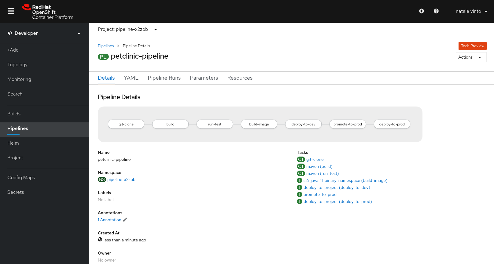

OpenShift Pipelines is a cloud-native, continuous integration and delivery (CI/CD) solution for building pipelines using Tekton. Tekton is a flexible, Kubernetes-native, open-source CI/CD framework that enables automating deployments across multiple platforms (Kubernetes, serverless, VMs, etc) by abstracting away the underlying details.
Understanding OpenShift Pipelines
Tekton defines a number of Kubernetes custom resources as building blocks in order to standardize pipeline concepts and provide a terminology that is consistent across CI/CD solutions.
The custom resources needed to define a pipeline are listed below:
-
Task: a reusable, loosely coupled number of steps that perform a specific task (e.g. building a container image). Tasks get executes as Kubernetes Pods while steps in a task map onto containers
-
Pipeline: the definition of the pipeline and the Tasks that it should perform
-
TaskRun: the execution and result of running an instance of task
-
PipelineRun: the execution and result of running an instance of pipeline, which includes a number of TaskRuns

In short, in order to create a pipeline, one does the following:
-
Create custom or install existing reusable
Tasks -
Create a
PipelineandPipelineResourcesto define your application’s delivery pipeline -
Create a
PersistentVolumeClaimto provide the volume/filesystem for pipeline execution or provide aVolumeClaimTemplatewhich creates aPersistentVolumeClaim -
Create a
PipelineRunto instantiate and invoke the pipeline
For further details on pipeline concepts, refer to the Tekton documentation which provides an excellent guide for understanding various parameters and attributes available for defining pipelines.
OpenShift Pipelines are already installed in this cluster using the OpenShift Pipeline Operator.
Convert the Jenkins pipeline into a Tekton pipeline
In this chapter you will convert the Groovy Jenkins pipeline that you executed in the previous chapter, into a Kubernetes-native YAML Tekton pipeline.
In order to achieve that, you will refactor all the steps from our original Pipeline into a new list of steps that better fit into a Tekton pipeline.
Stages to Tasks
All Jenkins Stages will be converted into Tekton Tasks or ClusterTasks. A ClusterTask is a Tekton task that is available for the whole cluster. OpenShift Pipelines installs a number of useful ClusterTasks when it is installed.
You can verify the list of available reusable ClusterTasks:
oc get clustertasksFor this exercise, you will need two ClusterTasks:
-
git-clone: downloads the source code from Git Repositories, we will use it for this purpose with our private Git Repository from Gitea
-
maven: performs Maven builds with target Maven goals, we will use it to run our builds and tests with Maven
All the other Stages will be converted with custom Tasks that you are going to define now:
-
s2i-java-11-binary-namespace: a Task to build a container image from the artifact generated by a previous Maven ClusterTask, and then push it to a target namespace. For our purpose we need to push it to a dev and a prod project like before.
-
promote-to-prod: a Task to tag our dev image to prod thus promoting it to the prod project
-
deploy-to-project: a Task to deploy an existing container image to a target project. We will use it to deploy the app to our dev and prod environments
-
Make sure you use the pipeline project pipeline-%guid%:
oc project pipeline-%guid% -
Create the three tasks:
oc create -f https://raw.githubusercontent.com/redhat-gpte-labs/rhtr2020_pipelines/master/workshop/content/tekton/tasks/s2i-java-11-binary-ns.yaml -n pipeline-%guid%oc create -f https://raw.githubusercontent.com/redhat-gpte-labs/rhtr2020_pipelines/master/workshop/content/tekton/tasks/promote-to-project.yaml -n pipeline-%guid%oc create -f https://raw.githubusercontent.com/redhat-gpte-labs/rhtr2020_pipelines/master/workshop/content/tekton/tasks/deploy-to-project.yaml -n pipeline-%guid% -
Review the 3 tasks you just created:
oc get tasks -n pipeline-%guid%Sample OutputNAME AGE deploy-to-project 2s promote-to-prod 5s s2i-java-11-binary-namespace 7s -
Examine these tasks. You can do this either from the Web Console (this link will only work if you are already logged into the Web Console) or via the command line. Take some time to understand the various properties and settings in each task.
oc get task s2i-java-11-binary-namespace -o yaml -n pipeline-%guid%oc get task promote-to-prod -o yaml -n pipeline-%guid%oc get task deploy-to-project -o yaml -n pipeline-%guid% -
You can also examine the the ClusterTasks:
oc get clustertasks git-clone -o yaml -n pipeline-%guid%oc get clustertasks maven -o yaml -n pipeline-%guid%
-
Persistence for OpenShift pipelines
Tekton Workspaces allow you to specify one or more volumes that each Task in a Pipeline can use during execution. In our case, we need persistency between Tasks to share our workspace. The first task clones the source code repository into the workspace, the second task builds the Java artifacts from the cloned repo and so forth.
-
Create a persistent volume claim called app-source to use as the Workspace:
oc create -f https://raw.githubusercontent.com/redhat-gpte-labs/rhtr2020_pipelines/master/workshop/content/tekton/pvc/workspace-pvc.yaml -n pipeline-%guid%
Create the OpenShift pipeline
Now that you have all prerequisites in place you can create the Tekton pipeline.
-
Review the Pipeline YAML definition:
apiVersion: tekton.dev/v1beta1 kind: Pipeline metadata: name: petclinic-pipeline spec: params: - default: petclinic description: The application deployment name name: APP_NAME type: string - default: >- %gitea_url% description: The application git repository url name: APP_GIT_URL type: string - default: main description: The application git repository revision name: APP_GIT_REVISION type: string - default: 'petclinic:latest' description: The application image stream name: APP_IMAGE_STREAM type: string - default: petclinic-%guid%-dev name: DEV_NAMESPACE type: string - default: petclinic-%guid%-prod name: PROD_NAMESPACE type: string - default: http://nexus.nexus.svc:8081/repository/maven-all-public/ name: MAVEN_MIRROR_URL type: string tasks: - name: git-clone params: - name: url value: $(params.APP_GIT_URL) - name: revision value: $(params.APP_GIT_REVISION) - name: deleteExisting value: 'true' taskRef: kind: ClusterTask name: git-clone workspaces: - name: output workspace: app-source - name: build params: - name: GOALS value: - -DskipTests - clean - package - name: MAVEN_MIRROR_URL value: $(params.MAVEN_MIRROR_URL) runAfter: - git-clone taskRef: kind: ClusterTask name: maven workspaces: - name: source workspace: app-source - name: maven-settings workspace: maven-settings - name: run-test params: - name: GOALS value: - test - name: MAVEN_MIRROR_URL value: $(params.MAVEN_MIRROR_URL) runAfter: - build taskRef: kind: ClusterTask name: maven workspaces: - name: source workspace: app-source - name: maven-settings workspace: maven-settings - name: build-image params: - name: TLSVERIFY value: 'false' - name: OUTPUT_IMAGE_STREAM value: $(params.APP_IMAGE_STREAM) - name: NAMESPACE value: $(params.DEV_NAMESPACE) runAfter: - run-test taskRef: kind: Task name: s2i-java-11-binary-namespace workspaces: - name: source workspace: app-source - name: deploy-to-dev params: - name: DEPLOYMENT value: $(params.APP_NAME) - name: IMAGE_STREAM value: $(params.APP_IMAGE_STREAM) - name: NAMESPACE value: $(params.DEV_NAMESPACE) runAfter: - build-image taskRef: kind: Task name: deploy-to-project - name: promote-to-prod params: - name: IMAGE_STREAM value: $(params.APP_IMAGE_STREAM) - name: DEPLOYMENT value: $(params.APP_NAME) - name: DEV_NAMESPACE value: $(params.DEV_NAMESPACE) - name: PROD_NAMESPACE value: $(params.PROD_NAMESPACE) runAfter: - deploy-to-dev taskRef: kind: Task name: promote-to-prod - name: deploy-to-prod params: - name: DEPLOYMENT value: $(params.APP_NAME) - name: IMAGE_STREAM value: '$(params.APP_NAME):prod' - name: NAMESPACE value: $(params.PROD_NAMESPACE) runAfter: - promote-to-prod taskRef: kind: Task name: deploy-to-project workspaces: - name: app-source - name: maven-settingsIf you observe the YAML manifest, you will see that Tekton pipelines accept parameters - just like Jenkins pipelines - then define all required steps as a sequence of tasks to run. Those steps can be executed sequentially or in parallel, and they can share some storage defined as
Workspace.One big difference between Jenkins and Tekton pipelines is the agent/executor. In Jenkins it’s just one pod, scheduled by the Kubernetes plugin, executing all the steps. In Tekton, being a native extension of Kubernetes, there are many pods involved in the setup/execution. Each task, within the same Pipeline, is executed by a different pod - and each step in a task is executed in its own container. That’s why we need a shared volume to let the git-clonetask share data with themavenand subsequent tasks. -
Now you can create the Pipeline inside the pipeline-%guid% project. You can do either from the %web_console_url%[Web Console] pasting the above YAML content (left-side menu Add+ → YAML), or directly from the terminal:
cat <<'EOF' | oc apply -n pipeline-%guid% -f - apiVersion: tekton.dev/v1beta1 kind: Pipeline metadata: name: petclinic-pipeline spec: params: - default: petclinic description: The application deployment name name: APP_NAME type: string - default: >- %gitea_url% description: The application git repository url name: APP_GIT_URL type: string - default: main description: The application git repository revision name: APP_GIT_REVISION type: string - default: 'petclinic:latest' description: The application image stream name: APP_IMAGE_STREAM type: string - default: petclinic-%guid%-dev name: DEV_NAMESPACE type: string - default: petclinic-%guid%-prod name: PROD_NAMESPACE type: string - default: http://nexus.nexus.svc:8081/repository/maven-all-public/ name: MAVEN_MIRROR_URL type: string tasks: - name: git-clone params: - name: url value: $(params.APP_GIT_URL) - name: revision value: $(params.APP_GIT_REVISION) - name: deleteExisting value: 'true' taskRef: kind: ClusterTask name: git-clone workspaces: - name: output workspace: app-source - name: build params: - name: GOALS value: - -DskipTests - clean - package - name: MAVEN_MIRROR_URL value: $(params.MAVEN_MIRROR_URL) runAfter: - git-clone taskRef: kind: ClusterTask name: maven workspaces: - name: source workspace: app-source - name: maven-settings workspace: maven-settings - name: run-test params: - name: GOALS value: - test - name: MAVEN_MIRROR_URL value: $(params.MAVEN_MIRROR_URL) runAfter: - build taskRef: kind: ClusterTask name: maven workspaces: - name: source workspace: app-source - name: maven-settings workspace: maven-settings - name: build-image params: - name: TLSVERIFY value: 'false' - name: OUTPUT_IMAGE_STREAM value: $(params.APP_IMAGE_STREAM) - name: NAMESPACE value: $(params.DEV_NAMESPACE) runAfter: - run-test taskRef: kind: Task name: s2i-java-11-binary-namespace workspaces: - name: source workspace: app-source - name: deploy-to-dev params: - name: DEPLOYMENT value: $(params.APP_NAME) - name: IMAGE_STREAM value: $(params.APP_IMAGE_STREAM) - name: NAMESPACE value: $(params.DEV_NAMESPACE) runAfter: - build-image taskRef: kind: Task name: deploy-to-project - name: promote-to-prod params: - name: IMAGE_STREAM value: $(params.APP_IMAGE_STREAM) - name: DEPLOYMENT value: $(params.APP_NAME) - name: DEV_NAMESPACE value: $(params.DEV_NAMESPACE) - name: PROD_NAMESPACE value: $(params.PROD_NAMESPACE) runAfter: - deploy-to-dev taskRef: kind: Task name: promote-to-prod - name: deploy-to-prod params: - name: DEPLOYMENT value: $(params.APP_NAME) - name: IMAGE_STREAM value: '$(params.APP_NAME):prod' - name: NAMESPACE value: $(params.PROD_NAMESPACE) runAfter: - promote-to-prod taskRef: kind: Task name: deploy-to-project workspaces: - name: app-source - name: maven-settings EOF -
Review the pipeline from %web_console_url%[Web Console]:
-
Toggle Developer Perspective
-
Select your project pipeline-%guid%
-
Go to left-side menu, click Pipelines and you should see a new pipeline named petclinic-pipeline.

-
-
Verify that the pipeline exists also from the command line:
oc get pipeline -n pipeline-%guid%
tkn: The Tekton CLI
Tekton has its own CLI for managing pipelines. This allows the developer to use the pipelines abstractions rather than having to be aware of pods and containers.
-
Examine the Tekton CLI version:
tkn version -
List currently available pipelines:
tkn pipeline ls -n pipeline-%guid%Sample OutputNAME AGE LAST RUN STARTED DURATION STATUS petclinic-pipeline 58 seconds ago --- --- --- ---